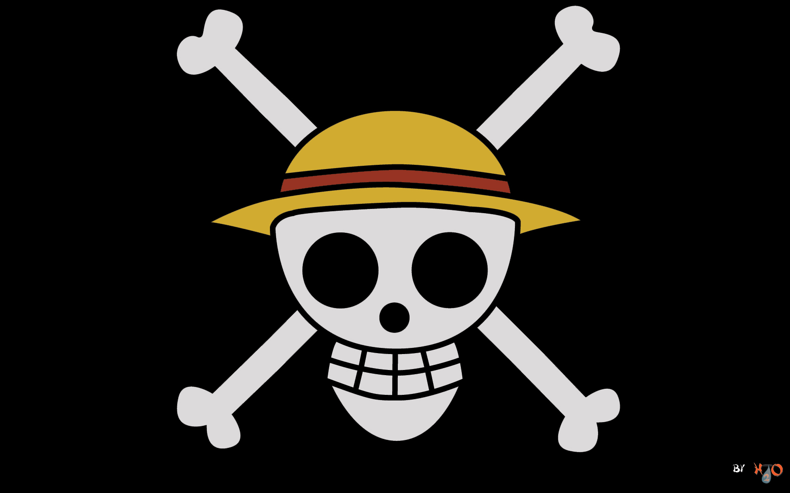

Principal
Monkey D. Luffy
Monkey D. Luffy (モンキー・Ｄ・ルフィ Monkī Dī Rufi?), más conocido como Luffy «Sombrero de Paja» (麦わらのルフィ Mugiwara no Rufi?), es el protagonista principal de la serie.Es el capitán y fundador de los Piratas de Sombrero de Paja así como un de los Cuatro Emperadores que gobiernan los mares del Nuevo Mundo
Mirá más

Los Piratas de Sombrero de Paja
Los Piratas de Sombrero de Paja (麦わらの海賊団 Mugiwara no Kaizoku-dan?), principalmente conocidos como la Banda de Sombrero de Paja (麦わらの一味 Mugiwara no Ichimi?), es una banda de piratas originaria del East Blue, pero tiene miembros de diferentes partes del mundo. Ellos son el foco y los principales protagonistas de la trama del manga y el anime de One Piece, siendo capitaneados por el protagonista principal de la serie, Monkey D. Luffy.
Mirá más